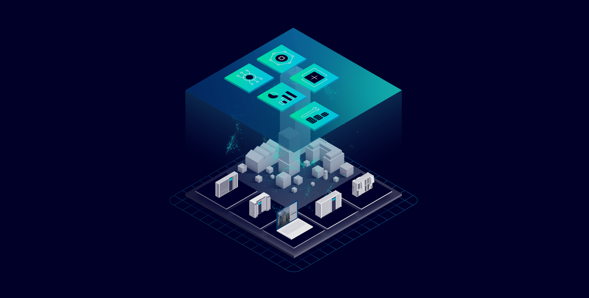
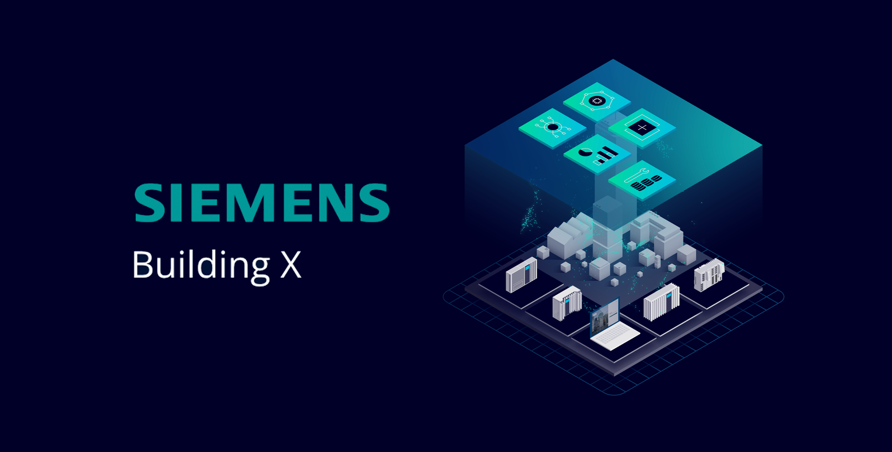

02 Siemens Smart Infrastructure · UX Design
Energy Manager.
A Building X product for monitoring and optimizing energy consumption and production across complex building portfolios. Un prodotto di Building X per il monitoraggio e l'ottimizzazione di consumo e produzione di energia su portfolio edilizi complessi.

Energy Manager — dashboard01 ContextContesto
Within Siemens' Building X, Energy Manager is a digital product for monitoring and optimizing energy consumption and production in complex building portfolios. All'interno di Building X di Siemens, Energy Manager è un prodotto digitale per monitorare e ottimizzare consumo e produzione di energia in portfolio edilizi complessi.
02 RoleRuolo
I worked as a Senior UX Designer, contributing to the end-to-end design process — from discovery and concept validation to detailed interaction design and developer handoff. Ho lavorato come Senior UX Designer, contribuendo all'intero processo di design — dalla discovery e validazione dei concept all'interaction design di dettaglio e all'handoff agli sviluppatori.
03 ActivitiesAttività
I collaborated with project managers and product owners to define and prioritize new features. I conducted user research through interviews and surveys, and created personas, user-journey maps and empathy maps. I developed information architecture, sitemaps and navigation flows to structure content. Ho collaborato con project manager e product owner per definire e prioritizzare nuove funzionalità. Ho condotto ricerca con utenti tramite interviste e survey, creando personas, journey map ed empathy map. Ho sviluppato architettura informativa, sitemap e flussi di navigazione per strutturare i contenuti.
I designed wireframes, low- and high-fidelity prototypes and mockups to visualize flows and interfaces. I ran usability testing, gathered feedback, iterated to optimize accessibility, usability and business goals, and aligned with developers and stakeholders to ensure correct implementation. Ho progettato wireframe, prototipi low e high fidelity e mockup per visualizzare flussi e interfacce. Ho condotto usability test, raccolto feedback, iterato per ottimizzare accessibilità, usabilità e obiettivi di business, e mi sono allineato con sviluppatori e stakeholder per garantire una corretta implementazione.

Filterable dashboards, charts & component set04 ImpactImpatto
Delivered and discussed component feasibility with developers, including:Consegna e discussione della fattibilità dei componenti con gli sviluppatori, tra cui:
- Interactive and filterable dashboards with charts.Dashboard interattive e filtrabili con grafici.
- Components like date pickers, filter sets, and internal standards based on shapes and colors.Componenti come date picker, set di filtri e standard interni basati su forme e colori.
- New sections, like dashboards or site-manager panels.Nuove sezioni, come dashboard o pannelli di gestione del sito.
- End-to-end process for the scope 1, 2 and 3 emissions monitoring dashboard, requested to earn ISO 14067 certification.Processo end-to-end della dashboard di monitoraggio delle emissioni scope 1, 2 e 3, richiesta per ottenere la certificazione ISO 14067.
I also ensured the frontend implementation matched the delivered UI.Mi sono inoltre assicurato che l'implementazione frontend corrispondesse alla UI consegnata.
05 Key learningsLezioni chiave
- Do not always prioritize feasibility in design; what seems impossible is often achievable.Non dare sempre priorità alla fattibilità nel design; ciò che sembra impossibile spesso è realizzabile.
- Ensure you are not reinventing the wheel.Assicurati di non reinventare la ruota.
- Save mockups of the bold concepts you propose, even if they won't be accepted — otherwise you'll end up only using the screens already available online.Conserva i mockup dei concept audaci che proponi, anche se non verranno accettati — altrimenti finirai per usare solo le schermate già disponibili online.